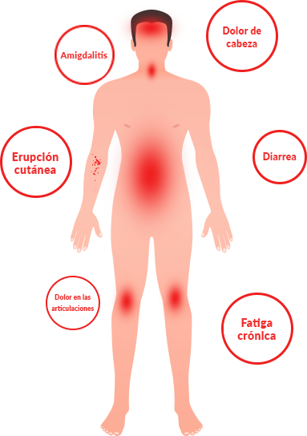

En el momento de escribir este artículo, según datos oficiales, 100 personas murieron por el nuevo coronavirus, 2761 personas fueron infectadas y 5796 personas estuvieron bajo sospecha. Pero, ¿qué medidas preventivas se puede tomar contra este virus?
En el Instituto Chino de Parasitología Médica y Medicina Tropical han descubierto una nueva causa de infección por un nuevo tipo de coronavirus: la infección por parásitos. Un estudio recientemente completado informa que los productos de la actividad vital de los parásitos son tóxicos y forman un ambiente favorable en el estómago para el desarrollo de bacterias podridas y virus. Es por esta razón que las personas con parásitos son más propensas a contraer un nuevo tipo de coronavirus.
El coronavirus en China es un nuevo tipo de coronavirus, es decir, una enfermedad del grupo de infecciones virales respiratorias agudas. En la zona de riesgo están las vías respiratorias, el sistema digestivo y nervioso, incluido el corazón, el hígado, los riñones y los ojos.
Los primeros signos de infección con un nuevo tipo de coronavirus son similares a los síntomas del resfriado y la gripe. Sin embargo, hay signos atípicos, según comunicó el canal de televisión japonés NHK.
Al comienzo del desarrollo de la neumonía, uno de los residentes infectados de China tuvo diarrea durante varios días, pero no tuvo fiebre. Aparece solo en la etapa tardía de la enfermedad con la tos que la acompaña.
Es posible detectar la presencia de un virus peligroso solo después de pruebas adicionales. Cuando se detecta, es necesario averiguar con quién ha estado en contacto el paciente y examinar a todas estas personas.
En cuanto a los parásitos, muchos creen que son exclusivamente helmintos, o sea gusanos. De hecho, hay miles más de opciones diferentes. Los parásitos pueden vivir en los pulmones, el corazón, el hígado, el estómago, el cerebro e incluso la sangre humana.
Los parásitos se multiplican y defecan dentro del cuerpo humano, mientras se alimentan de la carne humana. Dependiendo del hábitat, pueden causar diferentes consecuencias:
- Parásitos en el estómago llevan a infecciones virales (coronavirus);
- Los gusanos del corazón contribuyen al paro cardíaco;
- Parásitos que viven en el cerebro llevan a la esquizofrenia, el cáncer o la parálisis;
- Parásitos hepáticos provocan hepatitis y tumores hepáticos.
Por supuesto, este proceso no ocurre de una sola vez. Dependiendo de la edad, el estilo de vida, la nutrición y las condiciones ambientales de una persona, su cuerpo resiste la infección por un tiempo. Es decir, ocurre gradualmente y al principio es asintomático. Los síntomas aparecen cuando la infección ya combate el sistema inmune humano y comienza la destrucción activa de los tejidos del cuerpo. En este caso, el coronavirus chino comienza a multiplicarse de manera activa.
En cuanto al mismo efecto de los parásitos, en breve, sus procesos vitales destruyen los tejidos del cuerpo humano. Esto, a su vez, da como resultado células que se mueven libremente, cada una de las cuales puede ser la base de un nuevo tipo de coronavirus.
Desafortunadamente, hasta la fecha no hay herramientas precisas para diagnosticar parásitos dentro de una persona. En primer lugar, esto se debe a la presencia de un gran número de especies de parásitos (más de 2000 especies que conocemos), y en segundo lugar, a un nivel extremadamente alto de dificultad para detectarlos. El análisis completo de los parásitos en España está disponible solamente en unos lugares y cuesta mucho dinero.
¿Cómo protegerse de los parásitos y evitar que los virus destruyan tu cuerpo?
Los primeros síntomas por los que se puede decir que tienes parásitos en el cuerpo son:
- Mal aliento de la boca;
- Alergia (erupciones, ojos llorosos, secreción nasal);
- Erupciones cutáneas y enrojecimiento de la piel;
- Resfriados frecuentes, amigdalitis, congestión nasal;
- Fatiga crónica (te cansas rápidamente sin depender lo que hagas);
- Dolores de cabeza frecuentes;
- Estreñimiento o diarrea;
- Dolor articular y muscular;
- Nerviosismo, trastornos del sueño y apetito;
- Ojeras, bolsas debajo de los ojos.
En presencia de cualquiera de los síntomas se puede decir con una probabilidad de 99% que tienes parásitos en el cuerpo. ¡Y hay que luchar con ellos urgentemente!
Si hablamos de medicamentos, entonces todo es problemático. Hasta la fecha, solo hay una única elaboración que permite expulsar los parásitos. ¡Y el remedio se creó en España!
Este es un remedio antiparasitario "", que, por cierto, ¡se distribuyen por oferta! Para todos los que viven en la ciudad y la región, pero de esto vamos a hablar en adelante. "" está creado con la participación del Instituto Chino de Parasitología y el grupo de los científicos independientes jóvenes.

Estábamos trabajando en paralelo en dos decenas de remedios contra parásitos. Pero en el proceso de estudio se reveló que es precisamente "" el que es el más eficaz.
"" es una combinación segura de extractos de plantas que tiene un efecto negativo sobre la actividad vital de los parásitos. En el proceso de creación y prueba, este remedio ha demostrado ser excepcionalmente efectivo. Hoy en día, este es realmente el único remedio eficaz. Y si solo se tratara de dinero, todo el volumen creado se destinaría a la exportación.
En el Lejano Oriente están listos para comprar a casi cualquier precio. Pero tenemos una orden del Instituto, según la cual una cantidad significativa del remedio debe permanecer dentro del país y venderse a los ciudadanos de España. Además, el margen de exportación para los compradores (es que se vende en el extranjero por el precio decenas de veces más alto), nos permite distribuirlo en el país a precios mucho más bajos que el costo.
Hasta la fecha, este es el único remedio que realmente funciona para limpiar el cuerpo de los parásitos. Es por eso que las redes farmacéuticas internacionales y las compañías farmacéuticas quieren tanto adquirirlo. En comparación con otros medicamentos antiparasitarios, funciona a la vez contra todo el espectro de parásitos que pueden infectar a las personas.
"" mata y elimina del cuerpo los parásitos que viven en cualquier lugar, desde el cerebro y el corazón hasta el hígado y el intestino. ¡Ninguno de los medicamentos existentes hoy en día es capaz de hacerlo! Además, es un producto completamente natural que excluye la reacción alérgica, la alteración del equilibrio intestinal y otros problemas que surgen en el tratamiento con pastillas clásicas.
Cuiden su salud. Es posible que no lo sospechen, pero es 97-98% probable que dentro de su cuerpo viven los parásitos. Pueden estar en cualquier lugar: en la sangre, los intestinos, los pulmones, el corazón y el cerebro. Los parásitos literalmente les devoran desde dentro, al mismo tiempo que envenenan el cuerpo y lo hacen vulnerable a todo tipo de virus, incluido el nuevo coronavirus chino. Como resultado, aparecen problemas de salud que acortan la vida. Esto es, si no se habla del problema de las muertes repentinas, que también se asocian generalmente con la influencia de los parásitos y virus.